transmissions revision 4538
^ Projects infobox ^^
| image | |
| designer | |
| date | |
| tools | |
| parts | [[keyed_shafts|Keyed shafts]], [[keys|Keys]], [[gears_and_sprockets|Gears and sprockets]], [[shaft_collars|Shaft collars]], [[axial_bearings|Axial bearings]], [[frames|Frames]], [[bolts|Bolts]], [[nuts|Nuts]] |
| techniques | |
| stl | |
| git | |
Introduction
DIY simple 2-speed Go-Kart transmission.
Challenges
There aren't many off-the-shelf options for someone wanting to do this. Let's face it it's a niche item and most people just buy a dirt bike or quad if they're looking for some off road fun. The Torque-A-Verter (TAV) is one popular if slightly expensive solution, though with the demise of the parent company they may be harder to come by. I found one for around AUD$380 and was tempted but I'd still have to build a jack-shaft with 2 bearings and 2 sprockets and chains so the total cost would be well over AUD$450 also, I'm not happy with the life span of the expensive belts when used off-road. Replacing the engine with a motorcycle engine is the next logical option but that can be very expensive and wastes the existing powerplant (though I'm sure it could be put to other uses).
Approaches
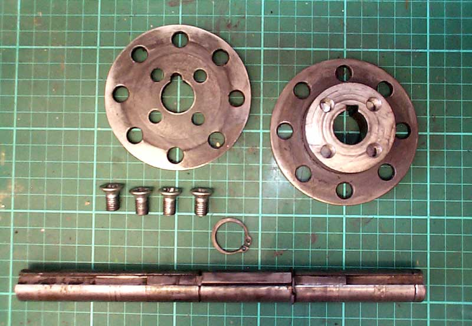
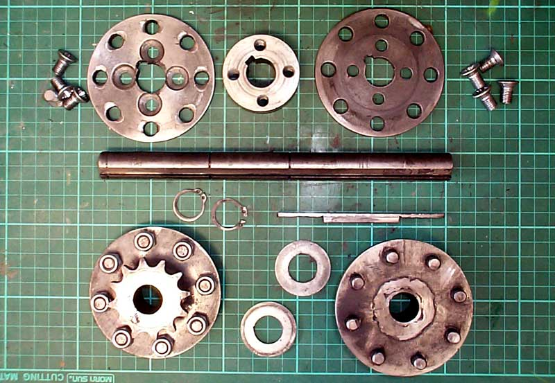
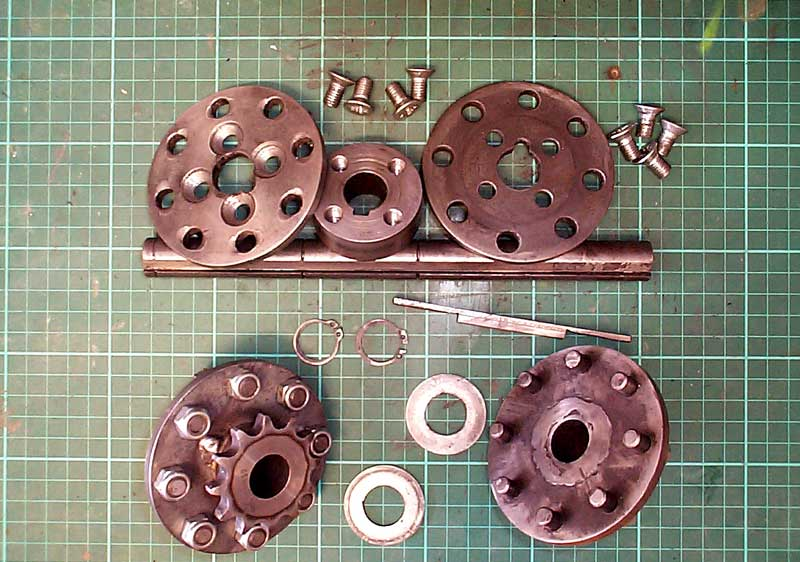
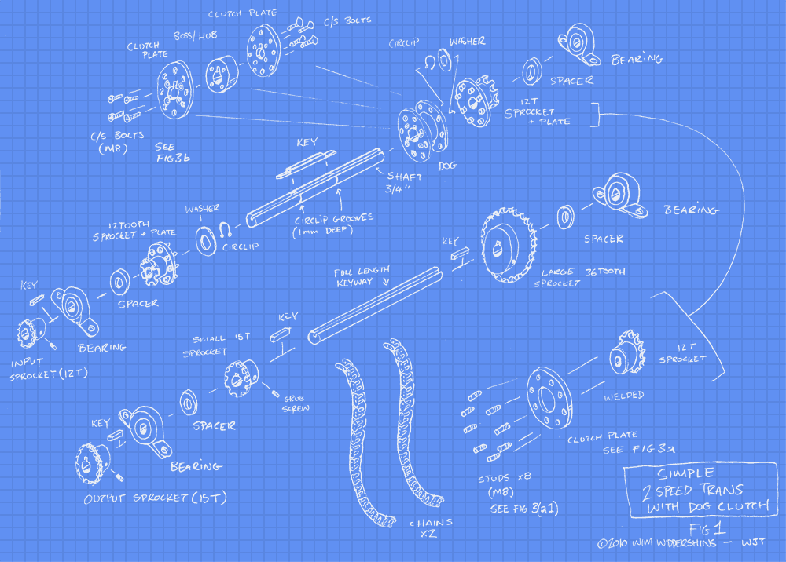
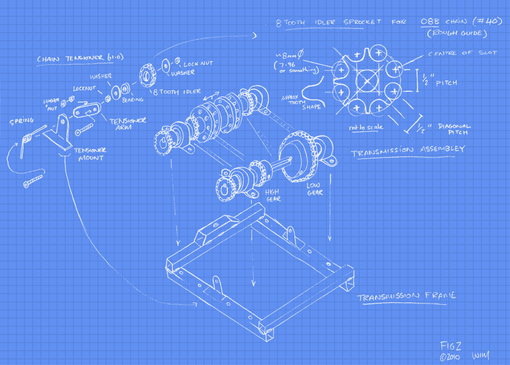
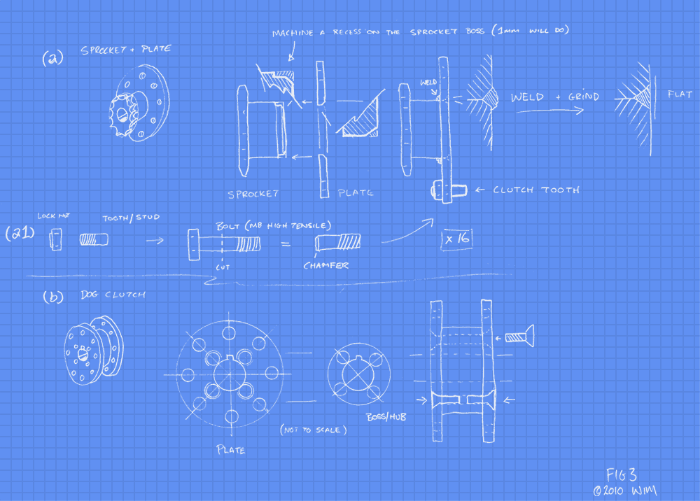
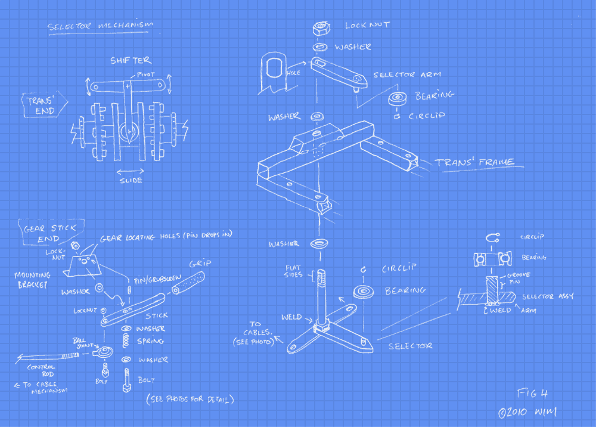
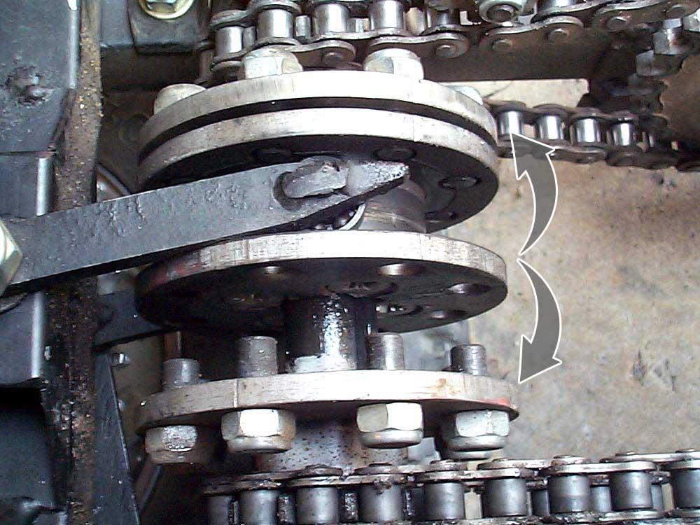
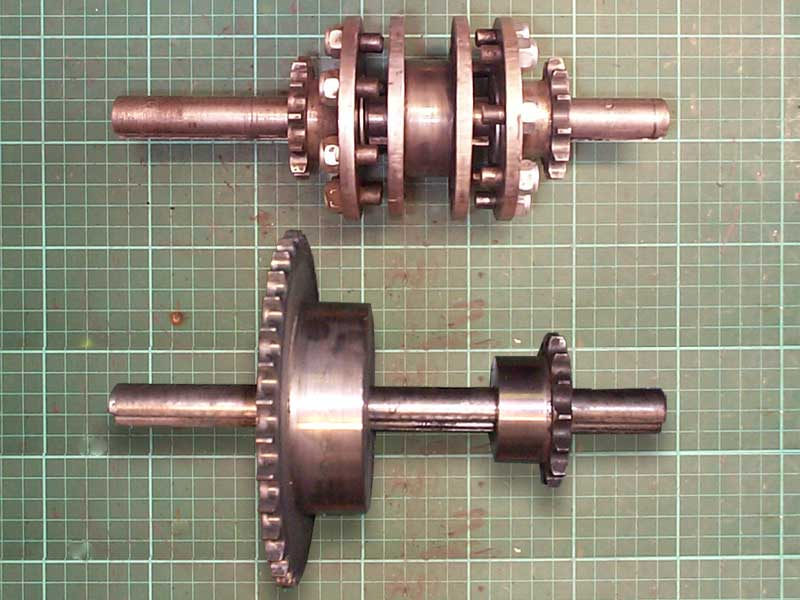
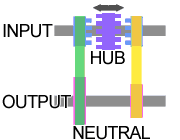
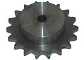
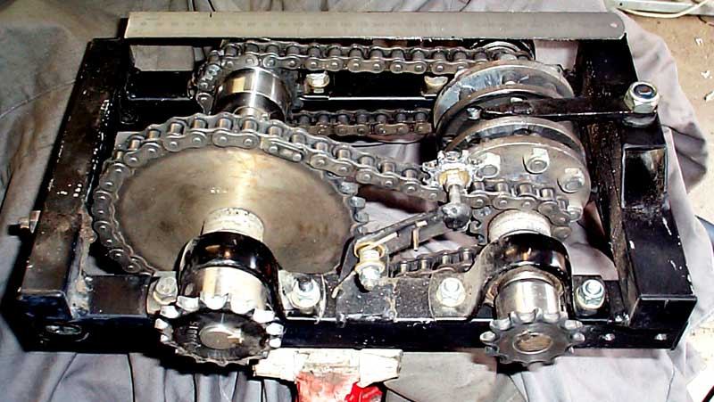
I decided to make things difficult for myself and DIY. First, I searched around for compatible transmissions out of something else such as ride-on mowers and cement mixers and even industrial washing machines but all of those have their problems and are potentially expensive or hard to find. Next, I looked at designs for geared, belt or chain driven transmissions and their parts costs.
Belts
Belts and pulley drives are by far the cheapest to build. Pulleys are less than AUD$10 each and can be probably found for free out of old washers and tumble dryers etc. Belts are available in a vast range of sizes and can be cheap if you choose common form factors. Some transmission designs take advantage of belt slip and use it as a proxy clutch meaning you can do without a "real" clutch if you design your belt tensioning cleverly. This is also the main drawback of belts; in an off-road application dust, mud and constantly changing loads are going to burn through belts quickly. Losing power over rough terrain due to belt slip is a killer.
Gears
Geared transmissions are probably the best solution, they're in just about every car on the road. Unfortunately, most vehicle transmissions are way too heavy for what we want to do here and motorcycle gearboxes are integrated, meaning it's a chore to rebuild them in some other form. Also, the individual gears are usually built onto a shaft so stripping them out and re purposing isn't a viable option. Sourcing stand alone gears isn't impossible, a supplier near me has individual gears for AUD$80 each, so it becomes a question of; "from how few gears can you get a functional gearbox?" Not few enough, I need at least six to do what I want here, way too expensive!
Chains
The kart already uses two sprockets and a chain to do the job, maybe we can reuse those and save a few bucks? The main problem with chains is keeping them clean and at the right tension and alignment. Costwize this type of system is a bit more expensive than belt and pulley but has the massive benefit of zero slipping and far greater durability, availability is good too. My local supplier sold me 12-tooth sprockets for less than AUD$10ea, the largest 36-tooth cost only AUD$17 which meant I could afford a few spares. The toughest part is understanding the right gauge to use. Most Go-Karts use a ANSI #35 or #40 chain so stick with those if you have them. The Drift-2 comes with a motorcycle gauge 420 which is a half inch pitch but not quite the same as #40 or any European standard. I got 08B which is similar to #40 but a bit wider than 420, I only had to mod one sprocket to match the 420 output from my clutch.
simple gearbox
Simple Gearbox
So with the power transmission technology chosen at last I can move on to the actual gearbox mechanism design. I looked at a few designs for 2-speed transmissions but the one I chose to base my design on is the tried and trusted dog clutch system. The theory is very simple; the input shaft is keyed to a sliding hub that can slide along the shaft and engage with the left or right input sprockets via a toothed clutch. The output shaft has two sprockets keyed to it, one is small for high gear the other larger for low gear. When the input shaft is driven (via a chain) from the centrifugal clutch at the engine, it rotates the sliding hub, engage the hub with the left or right ratio and you drive that ratio to the output shaft of the gearbox. The kart's rear axle has the original 48-tooth sprocket and is connected by chain to the gearbox's output shaft...
Still with me? It's all much clearer in pictures, probably.
Build summary.
I chose this design because it's relatively uncomplicated and cheap, the total cost was a little under AUD$350. The most difficult parts to make were the clutch parts but only because they require some precision and are made of heavier material than I'm used to working with. Also, a lot of threads needed tapping and that takes time and patience.
First I drew up some rough plans with all the parts I needed, at this stage it was mostly to get an idea of what materials and what size sprockets, bearings and shafts I'd have to buy. Here's a set of plans refined from my jumble of notebook scratchings.
figure-1-blueprint figure-2-blueprint
Figures 1 & 2: View of parts and assembly
figure-3-blueprint figure-4-blueprint
Figures 3 & 4: Dog and Gear selector construction
closeup of clutch
Photo 2: Close-up view of
Clutch & Selector assembly
Simple Clutch
Of the fabricating I started the clutch parts first. I marked out the clutch plates on 6mm thick steel plate and then cut it into a rough circles using an angle grinder and cutting disk then cleaned up on my sanding wheel. In hindsight this was a dumb ass way of doing it but I didn't have an 90mm hole saw and even if I did my drill press wouldn't bore it through 6mm. I had to make 4 plates so yep, it was a chore. With the plates shaped out I went to a local engineering firm to get the hub part fabricated, it is essentially a 50mm round, 20mm wide boss with a 3/4" centre, I got this made for about AUD$10. The engineer couldn't cut internal keyways, so I decided to torture myself and create it myself using my scroll saw and files. This again was a dumb ass way to do it but I probably saved 50+ bucks on this project doing all 5 internal keyways myself in this way. By the end I got so good at it that I could cut one in about 30 minutes flat.
With the boss done I drilled my clutch plates. Two of them will attach to the boss the other two will be welded to each of the primary 12-tooth (12-T) sprockets. All of them need 8 holes each for the dog teeth/studs. A total of 32 holes, 16 with tapped M8 threads the other 16 oversized to 10mm, will be the holes that the studs interlock into. I chose to make the studs from M8 high tensile bolts with the heads cut off and trimmed with chamfers so they will slip into the holes better (FIG3-a1). To attach the plates to the boss I used 4 countersunk M8 bolts for each plate (FIG-3b) these maintain a flat plate surface, the boss has 4 corresponding drilled and tapped holes all the way through (20mm). I wasn't sure if the cheap tap set I had would be able to go the distance but they surprised me and it was pretty easy going, I use heavy oil as tap lube which seems to do the job ok.
{video}
Video 1: Clutch assembly.
clutch parts clutch parts
Clutch parts; plates, boss and shaft
clutch parts gearbox parts
Input shaft and clutch parts. Input and output shafts
Now the sliding clutch bit is complete, next the other half (halves) of the clutch. I decided to put the studs on the sprocket side of the mechanism because this means they can be threaded into the plate and locked with nuts on the back of the plate for extra strength. I then prepare to weld the plates to the sprockets, to make sure they're square I shave 1mm from the sprocket boss and made the centre hole in the plate a friction fit, in addition I chamfered the outer edge of the boss and plate centre hole so that the weld would be flush with the plate surface when ground back (FIG-3a) then tapped them into place, squared them up tacked, tested and welded. Note; the two primary 12-T sprockets don't need keyways as they're intended to spin freely on the primary shaft, some grease keeps them moving freely (the rotational difference is only 1:3 between them so there's not a huge amount of wear). That's the main fabrication of the clutch done. I tested the clutch on a dummy shaft in my lathe just to see how the clutch would mesh and it all seemed to work as expected.
off the shelf sprocket
Sprocket with 1/2" pilot hole
Sprockets
All the sprockets for this project came with 1/2" pilot holes, I didn't have a 3/4" drill bit so I got the engineer from earlier to drill all of them and provide me with two keyed 3/4" shafts this only cost about AUD$20 which was half the price of a 3/4" drill bit and I got the shafts into the deal, skinflint I am. All I had to do then was more keyways (groan) and tap in 2 threads for each of the locking grub screws. As a side note I would've used 5 12T sprockets instead of the mix of 12T and 15T ones but the place I bought them from only had limited stock available. The input sprocket on the gearbox is a 12-tooth driven by the 10-tooth of the centrifugal clutch, while the gearbox output is a 15-tooth driving the 48-tooth on the axle. It affects my ratios a little but I can live with it and I like the idea of a small sprocket driving a larger one at every stage. High gear is almost the same ratio as the stock gearing, which was 4.8:1 (engine:axle). Low gear multiplies that by a factor of three using a large 36-tooth sprocket driven by a 12-tooth one, so it's something like 14.4:1. With the stock 13" wheels the cart flies in high gear and still gets along pretty quick even in low. I've yet to rig up a speedo to get real numbers but I'm guessing it does about 20km/h in low and 50ish in high. Sitting 6" from the ground it feels a lot quicker.
I made 8 spacers out of some 6mm aluminium, these provide a bit of space between the sprocket teeth and the bearings/saddle which will bolt to the frame later. I also cut some keysteel for each fixed sprocket, I probably could've just put one big key along the secondary shaft but meh, keysteel is cheap I'll redo if it turns into a problem.
gearbox assembled
Assembled Gearbox
Gearbox Frame and Chain
This was pretty straightforward, nonetheless I mocked it up with scrap tube tacked together to get an idea of the chain lengths required. Unfortunately I couldn't get a compact design without one side being a bit slacker than the other, so I had to put a tensioner on the slack side (FIG-2). This is ok as it's probably worth putting a tensioner on both sides so slack can be taken up as the parts age. There's rules about how far apart the centres of sprockets have to be from each other, one guide states that the distance between centres should be no less than the diameter of the larger sprocket, this was good enough for me. Cutting chain is a bit of a bast', chain wants to flop all over the shop especially when your dealing with a 10 foot length which is the minimum length you have to buy at most places. The mockup gearbox frame got me the distance between the shafts and resulting chain lengths so I went ahead an remade it in 30mm square tube (see: FIG-2 and photo right) it's a simple rectangular frame.
{video}
Video 2: Tensioner assembly
Tensioners
The tensioner described in FIG2 didn't last very long. It was made from aluminium and with all the grit getting thrown around on the chain was eaten pretty quickly. The idler sprocket in Video 2 (right) is made from some 3mm steel cut into a rough sprocket shape welded to a short section of pipe. This allows two bearings to be inserted which improves stability and wearing a lot. The bearings are a bit of a loose fit, but it works well and has stood up to about 20 hours use without falling apart. Also, I put a large copper washer on the outer side to reduce lateral movement.
Gear Selector
Figure 4 outlines the parts of the selector mechanism, some of this is optional, you can attach the gear stick side to the selector/shifter by cables or a control rod or a combination of the two like I did. The main point of interest here is the selector arm part of the gearbox and how it interacts with the clutch; it's really just a bearing each at the end of two pivoting arms (top and bottom) this way an even force is applied to the inside of the sliding part of the clutch with minimal friction (Photo 2). When the transmission is under rotation shifting the clutch is smooth from one position to the other.
Fitting it to the Kart
I'm not going to give too many tips on this part because I don't think I have the best solution, I tried not to weld to the Drift-2's frame where possible so that I could revert to stock standard if it all went pear shaped. Because of this, I had to compromise the mounting design quite a bit and I'm not quite happy with it yet, it's still a work in progress. Instead, here's a bunch of photos of it fitted to the Kart.
As you can see it was a snug fit behind the seat with about 10mm free. I had to replace the shocks/springs with rigid struts otherwise the gearbox would bash the back of the seat every time you hit a bump. It's ok because the stock springs don't really do a lot in fact with springs fitted the whole back end bounces up and down quite erratically over rough terrain putting a lot of strain on the engine mounts. The ride feels much the same with/without springs in any case. Originally, I'd planned to put the gearbox above the left rear wheel but changed the plans at the last minute because; it would be difficult to mount solidly, and would end up full of sand from the spinning wheel below. Looking at how well it all fits together now, the original plan was mad.
The gear selector goes through cables and back to a control arm which connects to the gear stick. This works quite well, is fully adjustable and makes it a lot easier getting the stick's mechanical motion around to the gearbox. I also made a modification to the steering arm, I remade it with 2 holes, one in the original position and one 20mm closer to the rod for a bit more leverage, this takes some of the feedback out on rough terrain. I used my tried and tested method of chain tensioning on the axle chain: a skateboard wheel, this one was used on my second Kart so at least one part has carried over. The engine and gearbox are separated by another tensioning bolt so that tension on the primary chain can be easily adjusted.
the kart right hand side left hand side gear stick & control rod
The Kart, Gearbox SIDE views, Gear stick with control rod.
Steering arm mod Gearstick pivot Axle chain tensioner Primary chain tensioner
Steering arm mod, Gear stick pivot, Axle chain tensioner, Primary chain tensioner.
In Practice
I wasn't sure how this thing would behave but I've tested it a few times now and it works quite well. The low range gear has turned my Drift-2 into a much more usable machine. Now I can power through boggy sand and up hills that it just couldn't handle before. Also, it does awesome tight donuts and spins the wheels way easier. Shifting gears on the go is a little rough occasionally, you have to lay off the power and ease it in. The centrifugal clutch takes up the difference in rotation between the ratios while the Kart coasts. Shifting from low to high while rolling works well but if your rolling too fast and try to shift back into low there's sometimes a bit of audible clash but nothing destructive. Sometimes it's easier to just stop and shift down into low then accelerate off. It's not something you can thrash under full power repeatedly, but then not many transmissions are.
After about 10 hours use the plates are showing some signs of wear around the holes where the studs interlock (slight rounding of the contact edge) but there's no sign of them becoming unusable any time soon, and anyway they can be replaced very cheaply when the do. The studs themselves don't seem any the worse for the abuse, I probably could've got away with fewer per plate maybe 6 or even 4? The transmission is quite noisy which isn't a surprise, it has 4 chains instead of one. Low range is the loudest, I put that down to the tensioner not quite keeping the pressure on. Of course loud is a subjective term it's not like you can't hear the engine over chain noise.
All in all this was a fun and worthwhile project, The first time I tackled a boggy hill (that made the kart cry before) and churned all the way to the top, made it well worth the effort. Donuts and drifting are heaps easier and when I shift back to high gear the Kart feels the same as it did stock, which is great for speeding along long flat spaces. The possibility of future tweaking means this will be something I continue to get fun out of, on and off the dirt track.